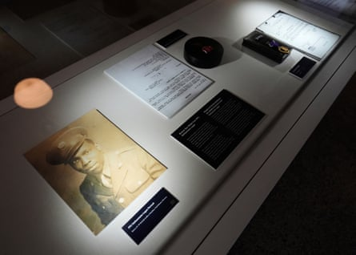

A T-shirt worn by Beyoncé during a Juneteenth performance on her Cowboy Carter tour has sparked a discussion over how Americans frame their history and caused a wave of criticism for the Houston-born superstar.
The T-shirt worn during a concert in Paris featured images of the Buffalo Soldiers , who belonged to Black US army units active during the late 1800s and early 1900s. On the back was a lengthy description of the soldiers that included “their antagonists were the enemies of peace, order and settlement: warring Indians, bandits, cattle thieves, murderous gunmen, bootleggers, trespassers, and Mexican revolutionaries.”
Images of the shirt and videos of the performance are also featured on Beyoncé’s website.
Artifacts are displayed inside the Buffalo Soldiers National Museum in Houston, Texas.Photograph: Ashley Landis/AP
As she prepared to return to the US for performances in her home town this weekend, fans and Indigenous influencers took to social media to criticize Beyoncé for wearing a shirt that frames Native Americans and Mexican revolutionaries as anything but the victims of American imperialism – and for promoting anti-Indigenous language.
Several Native influencers, performers, and academics took to social media this week to criticize Beyoncé or decry the shirt’s language as anti-Indigenous. “Do you think Beyoncé will apologize (or acknowledge) the shirt?” indigenous.tv, an Indigenous news and culture Instagram account with more than 130,000 followers, asked in a post Thursday.
Many of her critics, as well as fans, agree. A flood of social media posts called out the pop star for the historic framing on the shirt.
“We have to be honest about what they did, especially in their operations against Indigenous Americans and Mexicans,” said Chisom Okorafor, who posts on TikTok under the handle @confirmedsomaya.
A spokesperson for Beyoncé did not respond to a request for comment.
The Buffalo Soldiers served in six military units created after the US civil war in 1866. They were comprised of formerly enslaved men, freemen, and Black civil war soldiers and fought in hundreds of conflicts – including in the Spanish-American war as well as the first and second world wars – until their 1951 disbanding.
As the quote on Beyoncé’s shirt notes, they also fought numerous battles against Indigenous peoples as part of the US army’s campaign of violence and land theft during the country’s westward expansion.
Some historians say the moniker “Buffalo Soldiers” was bestowed by the tribes who admired the bravery and tenacity of the fighters – but that might be more legend than fact, said Cale Carter, director of exhibitions at the Buffalo Soldiers National Museum in Houston.
Carter and other museum staff said that, only in the past few years, the museum made broader efforts to include more of the complexities of the battles the Buffalo Soldiers fought against Native Americans and Mexican revolutionaries – and the role they played in the subjugation of Indigenous peoples. They, much like many other museums across the country, are hoping to add more nuance to the framing of American history and be more respectful of the ways they have caused harm to Indigenous communities amid political pressure on schools to avoid honest discussions about the US’s past.
The Buffalo Soldiers National Museum in Houston, Texas.Photograph: Ashley Landis/AP
Simultaneously, Beyoncé’s recent album Act II: Cowboy Carter has played on a kind of American iconography, which many see as her way of subverting the country music genre’s adjacency to whiteness and reclaiming the cowboy aesthetic for Black Americans. Last year, she became the first Black woman ever to top Billboard’s country music chart, and Cowboy Carter won her the top prize at the 2025 Grammy Awards , album of the year.
But Johns Hopkins University professor and historian Ted Stoermer also points out that the Buffalo Soldiers have been framed in the American story in a way that also plays into the myths of American nationalism.
As Beyoncé’s use of Buffalo Soldiers imagery implies, Black Americans also use their story to claim agency over their role in the creation of the country, said Alaina E Roberts, a historian, author and professor at the University of Pittsburgh who studies the intersection of Black and Native American life from the civil war to present day.
The problem, she said, is the Buffalo Soldiers “were literally involved in not just the settlement of the [US] West but of genocide in a sense”.
Okorafor said there is no “progressive” way to reclaim America’s history of empire building in the west – and that Beyoncé’s use of Western symbolism conveys the message that “Black people, too, can engage in American nationalism.”
“It is a message that tells you to abandon immigrants, Indigenous people, and people who live outside … the United States,” she said. “It is a message that tells you not only is it a virtue to have been born in this country – but the longer your line extends in this country, the more virtuous you are.”